無料のアプリで、
足りていますか？
足りているなら、それでいい。「ちょっと足りない」の分だけ、あなたの言葉で、その日のうちに動く道具にします。美容室の予約メモから、Gemの引っ越しまで。
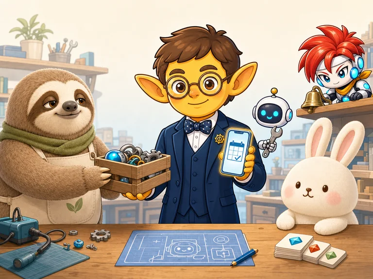
- 当日デモが届く速さ
- 24人いっしょに働くAI社員
- 4本Brainで販売中の商品
- 22年教壇に立った経験
「みんな、無料のアプリで済ませちゃうよ」
先月、美容室で聞いた言葉です。そのとおりだと思います。無料で足りるなら、お金を払う理由はありません。
工房の出番は、無料アプリに自分を合わせるのが、しんどくなったときだけです。
| 無料のアプリ | この工房の道具 |
|---|---|
| みんな向け。機能が多くて、探す | あなた向け。ボタンは3つくらい |
| 字が小さい。老眼だとつらい | 字は大きく。指で押せる大きさ |
| アプリを入れて、登録して、ログイン | LINEから開く。登録なし |
| 店の言葉が使えない | 「カット」「カラー」など、店の言葉で作る |
| 足りないところは、我慢する | 使いながら、言えば直る。育つ |
無料アプリのほうが合う人も多いです。相談のときに、そう言うこともあります。
大きなシステムは作りません
「あと5分あれば」を奪っている小さな詰まりを、いちばん小さな道具でほどきます。
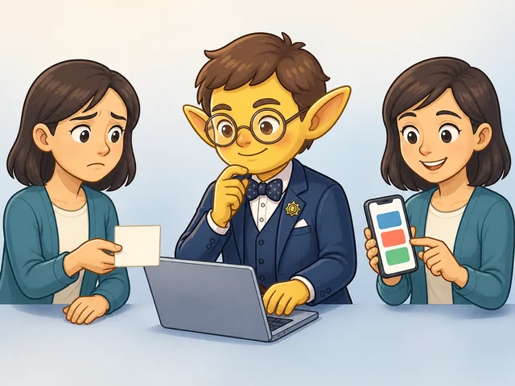
小さなアプリを作る
紙のノートや頭の中のメモを、スマホで開く道具に。LINEから開いて、大きな字で、その日から使えます。
- 美容室の予約メモ
- 家族の行事と持ち物チェック
- 毎日の記録ツール
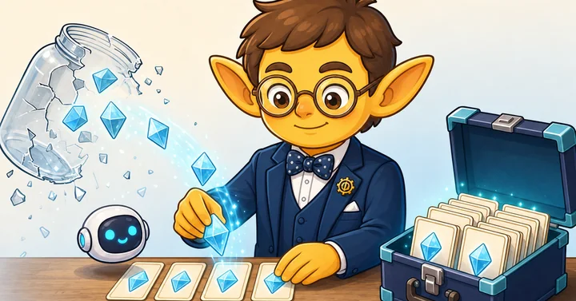
AIの引っ越し・整備
終了するGemをSkillsへ。膨らんだCodexのログを消さずに空ける。AIまわりの「困った」を道具にして渡します。
- Gem Port Skills
- 消さずに空ける
- 事実の箱（fact-box-writer）
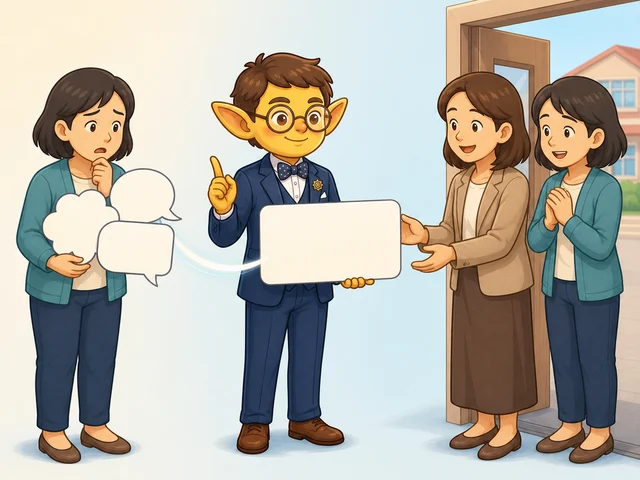
実録で教える
できたことより、つまずいた場所と抜け方を残します。教材も記事も、うちの現場で本当に起きたことだけ。
- Robloxゲーム制作の実録
- Rondo実録（Xの連載）
- 元教員の相談部屋
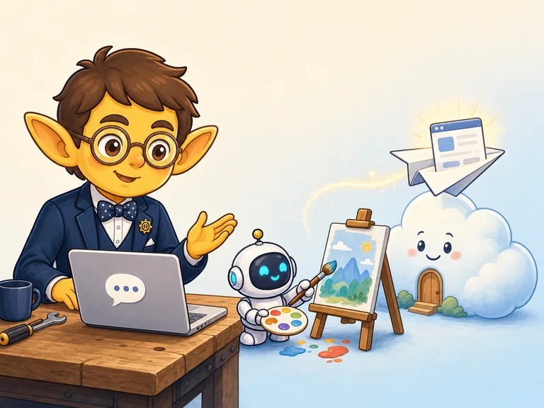
企業・団体向けのAI活用研修
研修の依頼も受け付けています。Claude Code・Codex・Gemini Notebookを、現場の「あと5分」に使う入口から。教員22年の伝え方で、はじめての人に合わせます。
- AI秘書の立ち上げ（雇う・名前をつける・小さな仕事を任せる）
- 社内の「5分の詰まり」を、その場で道具にするワークショップ
- 内容・人数・料金は相談して決めます
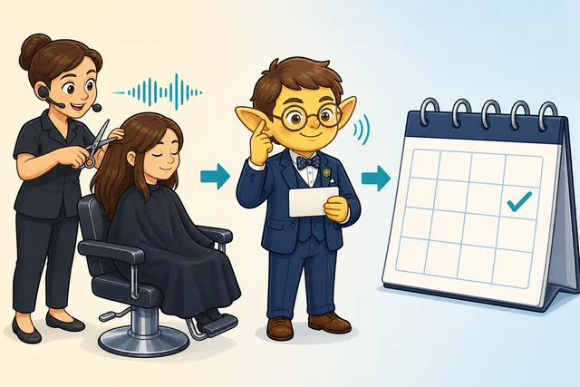
ある美容室の「予約メモ」
「紙の予約ノート、スマホで見られたらいいのに」
無料の予約アプリはいくつもあります。それでもこの店では、紙のノートで回していました。合うものがなかったからです。
困りごとを聞いた、その日のうちにデモを作ってLINEでお渡ししました。使うのは60歳前後の店主さん。だから設計はこうです。
- 文字は大きめ。複雑な操作は置かない
- LINEから開いて、そのまま触れる
- 今日から3か月先までのカレンダー、5分刻みの予約
- データは端末の中に。お客さまへの送信はアプリからはしない
いまも、そのお店で動いています。
運用中・公開中・準備中
ぜんぶ、実際の困りごとから生まれています。
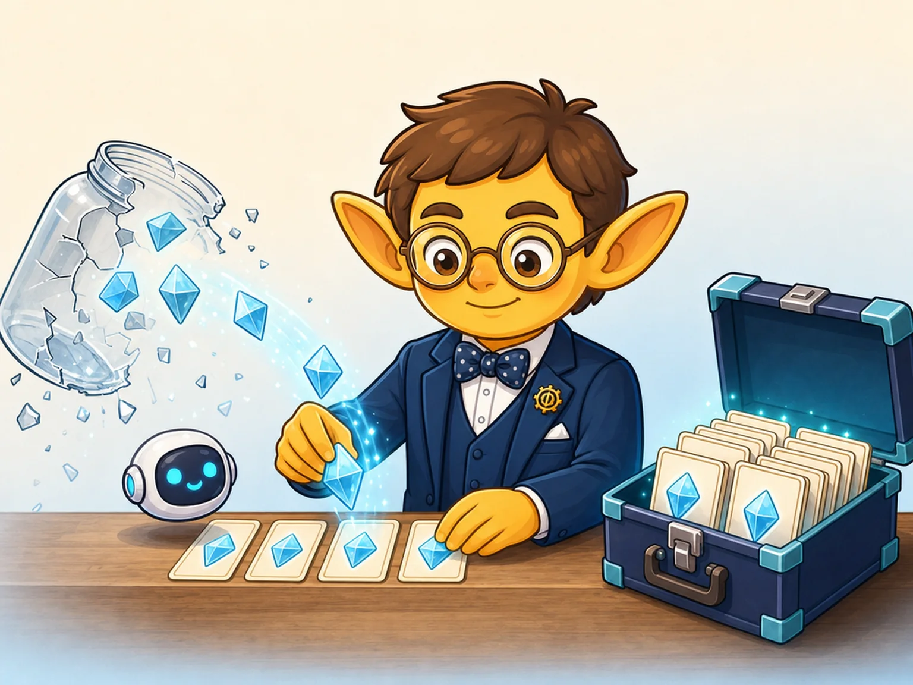
Gem Port Skills
GeminiのGemの中身をAIに渡すだけで、Claude CodeやCodexで動くSkillsへ引っ越すスキル。10月20日のGem終了に間に合わせるために作りました。
Brainで販売中・980円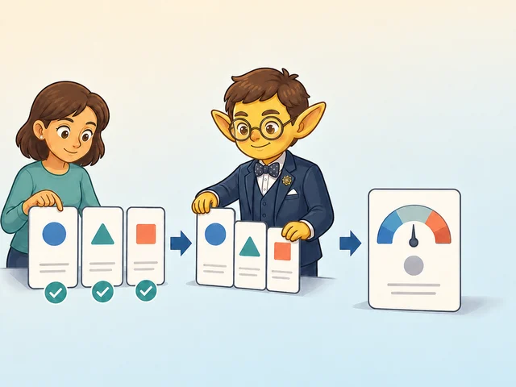
Gemの健康診断
7つの質問・約30秒で、今のGemの「守られ度」が5段階でわかります。買わなくて大丈夫な人には、そう出ます。
公開中・無料美容室の予約メモ
紙の予約ノートをそのままアプリに。大きな字、5分刻み、LINEから開く。上の事例の実物です。
導入店で運用中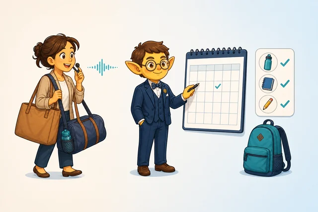
家族の行事・持ち物チェック
園や学校の行事予定を登録して、当日はタップでチェック。忙しいママの「ポチポチ入力」を減らす設計。同様のアプリを制作できます。
制作事例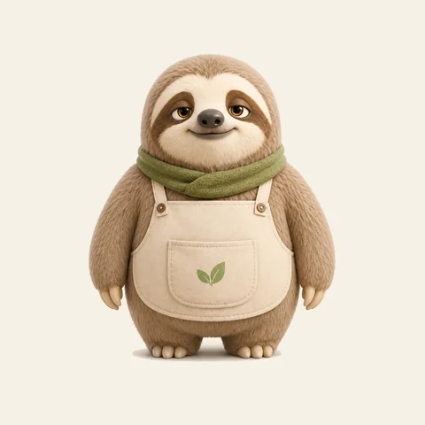
のんびり屋さん（TikTok）
ナマケモノの店主「なまお」が営む雑貨店。棚札つきの商品紹介と、無言のキャラ動画で「倒れないための自動化」を実験中。
公開中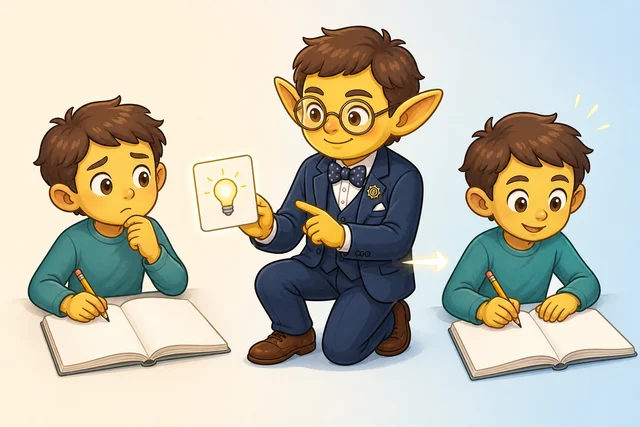
消さずに空ける
Codexの会話は残したまま、ログ内の埋め込み画像データだけを外す。診断・バックアップ・検証・復元まで順番に進められるmacOS向けスキル。
Brainで販売中事実の箱（fact-box-writer）
使ってよい「事実・実セリフ・境界線」を先に整理し、箱の中だけでX投稿や記事を組み立てるClaude Codeスキル。
Brainで販売中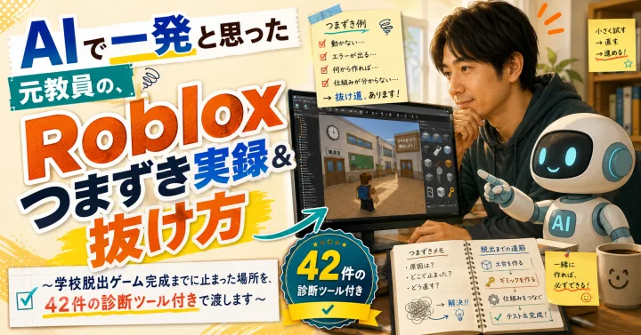
Robloxゲーム制作 つまずきの実録
未経験からゲームを作る途中でつまずいた場所と、抜け方の記録をそのまま教材に。
Brainで販売中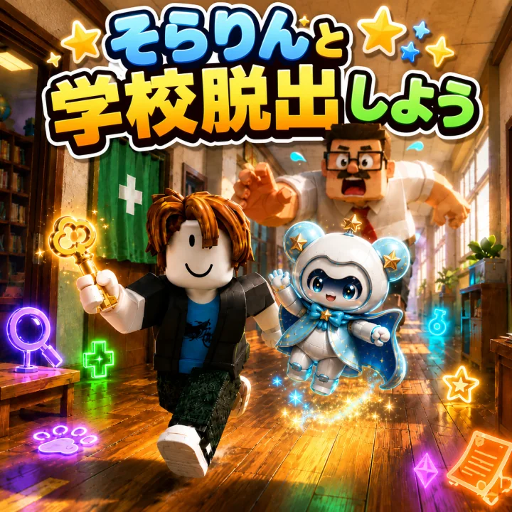
Robloxゲーム「そらりんと学校脱出しよう」
学校あるあるクイズを解きながら脱出する子ども向けゲーム。未経験からAIと一緒に作りました。無料で遊べます。
公開中元教員の相談部屋
学校への連絡の仕方・文例を「解決カード」で。元教員だから書ける道案内。無料で使えます。
公開中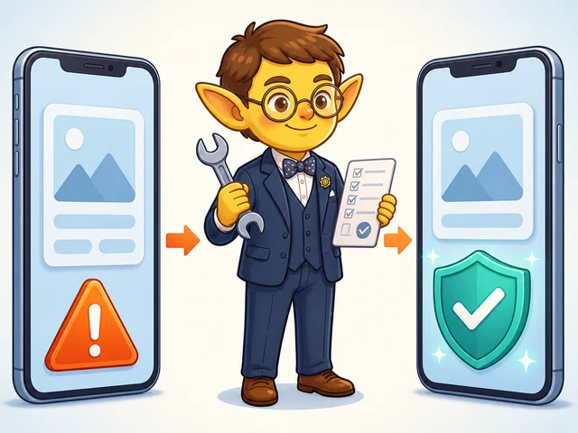
腹膜透析の記録ツール pd-helper
自分が毎日使うために作った、透析の記録と在庫管理の補助ツール。医療判断はしない設計です。実際に使っている様子を動画で。
実演動画人間は僕ひとり。あとは役割ごとに名前をつけたAIとキャラクターです
最後の判断は、いつも人間がします。
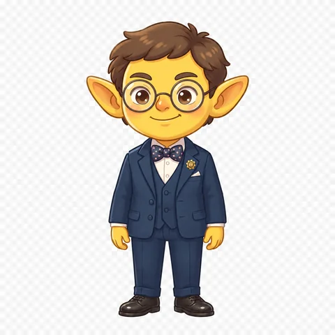
えい案内役・店主頼んで、確かめて、渡す係。この案内役の絵は僕の分身です。
- なまおのんびり屋・店主
ナマケモノの雑貨店主。TikTokで棚札つきの商品紹介を担当。
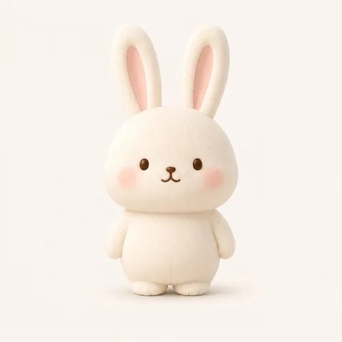
ぽてうさうさぎ・新人ピンクのほっぺが目印。おだやかで、ちょっぴり天然。動画で自己紹介の準備中。
- クロノ数字の声
売上や登録の「鈴」を読んで、声で教えてくれる係。夜中の鈴も朝にまとめて報告。
- なおさん夜も動く自走担当
OpenClawで24時間側を受け持つAI社員。動画の量産や巡回を、僕が寝ている間に進めます。
まずは無料で、「できる？」「いくら？」だけ聞けます
頼むかどうかは、話してから決めてください。
| いまあるアプリ・ツールの小修正 | 3,000〜5,000円 |
|---|---|
| 1枚もののミニアプリ制作予約メモ・チェックリスト・計算ツールなど | 5,000〜15,000円 |
| 音声入力・カレンダー付きアプリ | 10,000〜30,000円 |
| 見守り（不具合対応・小さな改善） | 月3,000〜5,000円 |
| 企業・団体向けのAI活用研修内容・人数・時間に合わせて | 要相談 |
内容を伺ってから、着手前に金額を確定します。追加費用が出る場合は必ず先にご相談します。
制作会社に頼むと数万〜数十万かかる内容を、AIの活用でこの価格にしています。無料アプリで足りている方は、そのままで大丈夫です。
2026年9月2日、Claude Code（Fable 5.1）が出た日に作り直しました
使った道具は3つ。頼み方は、イケハヤさんの教科書のとおりです。
- Claude Code作ってくれる。「こんなページを作って」と頼むと、AIがコードを書きます。
- fal描いてくれる。案内役や仲間たちの絵は、既存の1枚を「親」にして描いてもらいました。
- Cloudflare出してくれる。できたページを世界中から見られる場所に置く係。
今日の時系列
- 9:16Fable 5.1の初日。前日の引き継ぎから始める
- 10:0x「教科書3冊を使って改修を」と発注。まず古い文言を今日の事実に
- 10:2x参考サイトを見て「いきなり離脱されない」構成へ。絵をfalで3枚
- 11:15「全面改修で」。仲間たちの絵を足す
- 11:4x「ダサい」。金継ぎで測ると散らかり度65。色と組み方を変えて、この形に
使った教科書
- Claude Codeの教科書AI秘書から始める。「計画を出させて、検収する」の型980円
- falの教科書「同じ顔のまま描く」特徴ロックと、文字ごと焼き込むサムネ480円
- Cloudflareの教科書作ったものを、自分の番地で世界に出す。罠帖47件つき480円
- 金継ぎAIで作ったページのダサさを測って、壊さず直す。このページの検収に使いました980円
リンク先はイケハヤさんのBrain販売ページです。価格は2026年9月2日時点。教材の内容や成果を保証するものではありません。
えい｜倒れないための自動化
高校と特別支援学校で、教壇に22年。学校現場は「あと5分あれば」の連続で、その5分を奪っていくのは、いつも小さな事務作業でした。
いまは自宅で毎日、腹膜透析をしながら仕事をしています。体力に上限があるからこそ、「がんばらなくても回る仕組み」を先に作る。それが僕の設計のクセです。
- 2004教員になる高校・特別支援学校あわせて22年、300人以上を指導
- 2022.12腹膜透析を開始自宅で毎日。働き方を「仕組みで回す」設計に切り替える
- 2026.4退職、AI実務へClaude Code・Codex・Gemini Notebookを役割分担するチーム体制を自宅に構築（いまは24人のAI社員）
- 2026.6AIミニアプリ工房として活動開始美容室の予約メモ導入・家族の行事アプリ・学習アプリ「そらりん」・Robloxゲーム
- 2026.8Brain商品4本・Gemの健康診断を公開消さずに空ける／事実の箱／Roblox実録／Gem Port Skills
- 2026.9.2このサイトを作り直すFable 5.1の初日に、仲間たちの絵といっしょに
いま使っている道具で、足りないところを一つ
「予約帳の字が小さい」「行事の予定を毎回打ち直している」。その一言をLINEで送ってください。
翌日までに「できる・できない・いくら」を返します。無料アプリで足りるなら、そう言います。
足りないところを、LINEで一つ送る